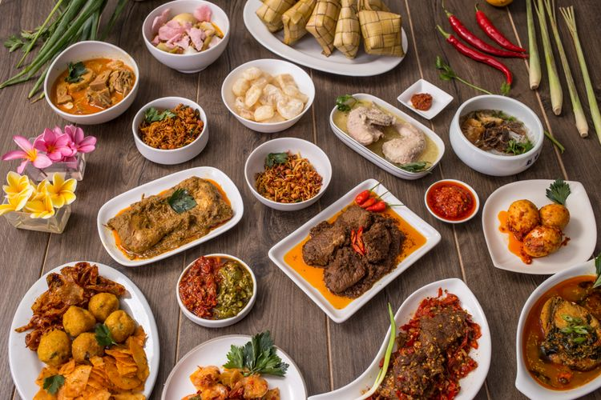

Resep Masakan
Tentang Website
Tentang STMIK KHARISMA
Tentang Website
Tentang STMIK KHARISMA
menu
Resep Masakan Nusantara

Ayam Baboto Khas Papua
Ayam Goreng Sasando Khas NTT
Ayam Lodho Khas Tulungagung
Ikan Kuah Kuning Khas Papua
Kerengsengan Koyo dan Urat Sapi Khas Jatim
Nasi Bakepor Khas Kutai Kartanegara
Pallubasa Khas Makassar
Pempek Palembang
Sate Lilit Khas Bali
Seblak Bandung
Tahu Tek Surabaya